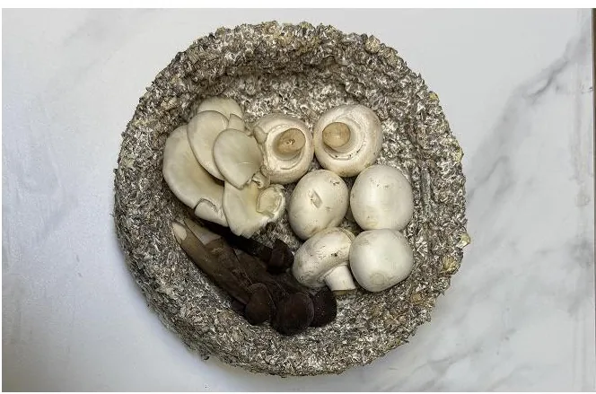
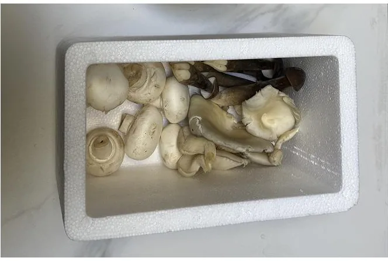
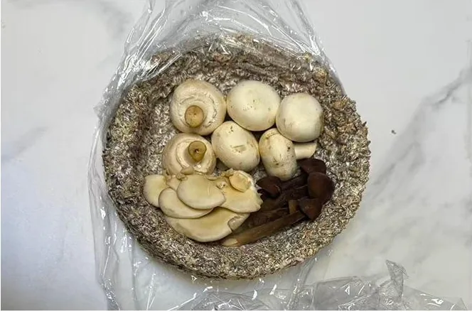
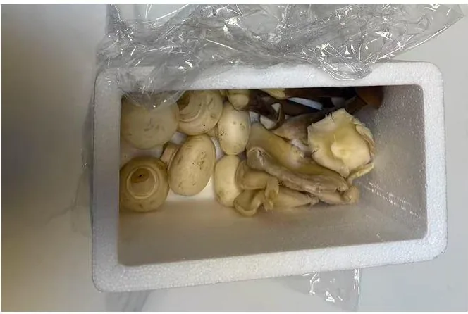
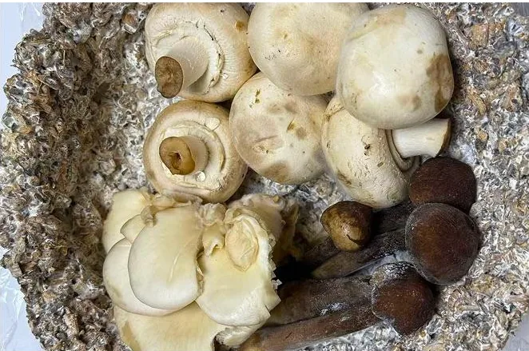
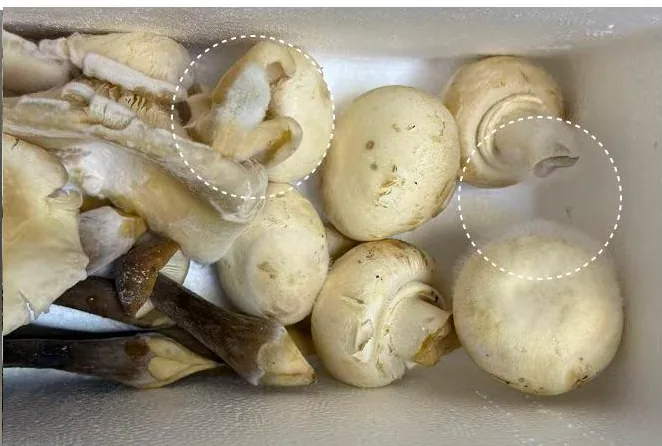
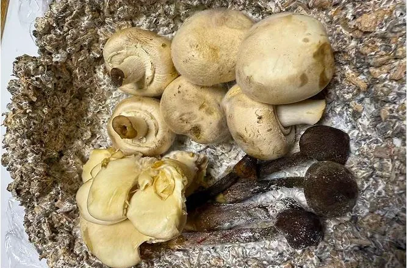
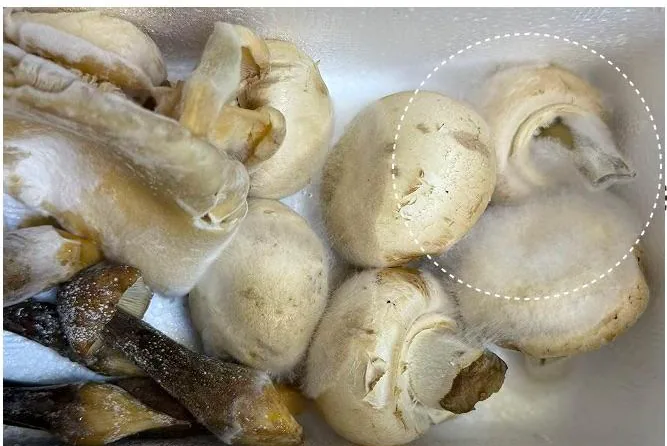
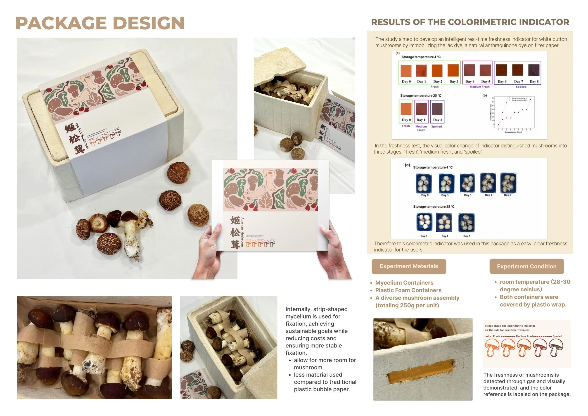
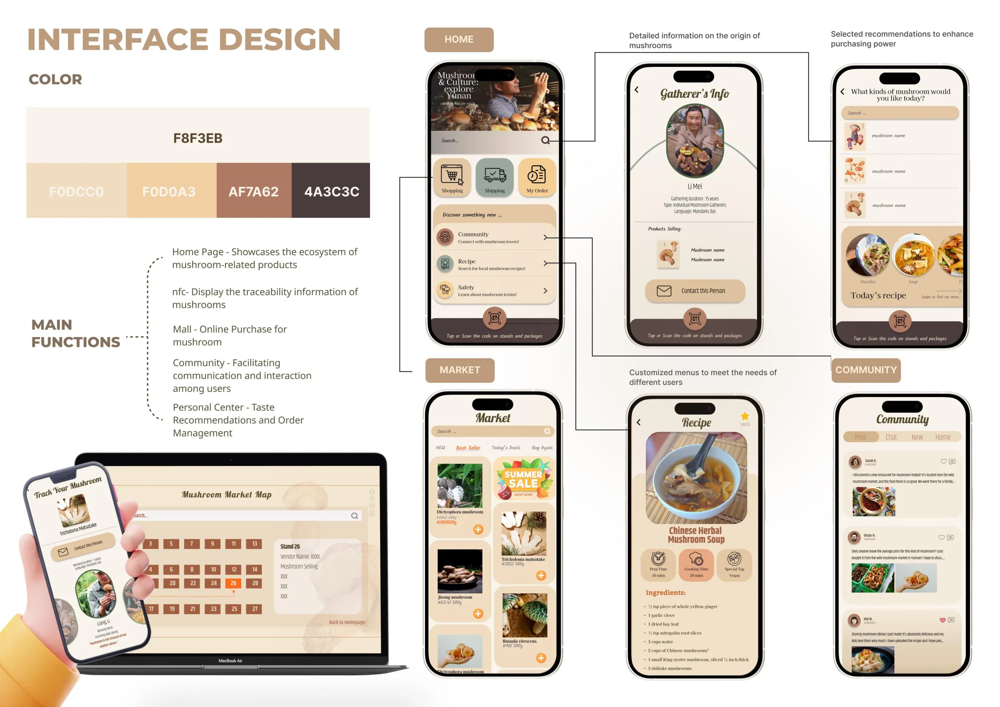

View market information
On the market's large screen, buyers see today's popular mushrooms and price changes, so they can find what they want quickly.
Service Design · 2025
An intelligent mushroom system that brings together biotechnology, the Internet of Things and circular design.
I redesigned the whole journey of wild mushrooms, from the forest to the dinner table. NFC and blockchain traceability make food safety visible, packaging grown from mycelium closes a zero-waste loop, and a color indicator on the box shows when the mushrooms are best to eat.
Background
The region's edible wild mushrooms account for more than half of those found worldwide, and two-thirds of the varieties available in China.
Yunnan is a global powerhouse for wild mushrooms, holding a large share of the world's species and production. It supplies Europe, Japan and South Korea with high-value exports like matsutake, earning over $1 billion a year, and specialized markets and mushroom tourism drive the local economy.
Yunnan's share of China's mushroom production
Yunnan's share of global mushroom production
Current problem
Mushroom poisoning is a serious food safety problem in China. Since 2019, China CDC has investigated a series of poisoning outbreaks, and news reports regularly describe incidents caused by people eating wild mushrooms by mistake.
↻ And the cycle starts again.
Summary. The industry needs stronger regulation, so that local residents can earn more while visitors who don't know wild mushrooms are better protected.
Research
I followed a mushroom from the forest to a buyer mailing it home, and mapped how the buyer feels at each stage.
Tap a step to see its pain point and insight
Feeling unsafe because of the vans driving around
Happy to buy fresh mushrooms straight from the vans
Having trouble finding the type of mushroom I want
Frustrated talking to vendors because of the language barrier
Happy that I can mail the mushrooms back home
Design concept
Communication is hard between buyers and vendors.
More digital information and assistance
Buyers worry whether mushrooms are safe.
Information that guarantees safety
The condition of the mushrooms isn't clear.
Cues that show freshness
From these pain points I built a system of packaging, a large market screen and an app, to address unclear information, poor communication and short shelf life.
Service design
Every touchpoint across four phases, from before purchase to after, with the frontstage, backstage and support processes behind it.
Click to view full size
Material experiments
The root-like network of thread-like structures (hyphae) that forms the body of fungi. It's a sustainable, biodegradable material.
A controlled comparison: the same mushrooms in a mycelium container and a standard foam box, under the same light and position.


All samples start fresh, chosen from the same batch.


Water droplets start to form inside both, with more inside the foam box.


Clear mold inside the foam box, and every mushroom in it has started to mold.


The mycelium container is in much better condition. The foam box shows extensive mold.
Mushrooms stored in mycelium kept their structure much better and oxidized less. Those in foam decomposed further, with a strong odor, visible mold and more liquid runoff, likely because moisture was trapped inside.
Product
Strips of mycelium hold the mushrooms in place inside, using less material than bubble wrap. A strip of lac-dye indicator on the side changes color as the mushrooms age, from fresh to medium fresh to spoiled.

Click any module to view it full size
Product
The app traces each mushroom back to the person who gathered it, and adds a market, recipes and a community. The market screen shows today's popular mushrooms, prices and a map of stalls.

Click any module to view it full size
Experience
On the market's large screen, buyers see today's popular mushrooms and price changes, so they can find what they want quickly.
Holding a phone to a vendor's NFC tag brings up the mushroom's traceability record, so buyers can purchase with confidence.
The dedicated packaging keeps mushrooms fresh longer and shows the best time to eat them.
Recipes in the app guide the cooking, and buying again later is faster and easier.
Strategy